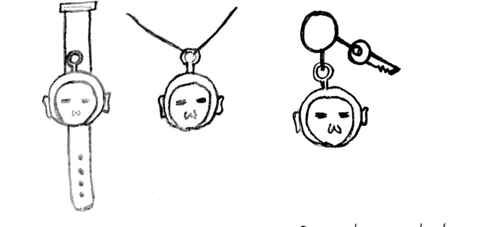

In this making project, our group is trying to design a project that can address the social issue: children missing, the sexual assault of children and the kidnapping of children. When I search for information online, I always see the news about children getting lost. To help reduce the rate of children getting lost in public places, our group decided to make a sensor-based device which can connect the digital app. Parents could track their young kids based on our product. Our target users of this product are young kids and parents.
Our design includes 2 parts: sensor-based device (for children), and digital app (for parents).
For the sensor-based device, we’re thinking to use the 3D printer to make the exterior of the sensor. We would insert GPS inside the sensor. To make the children willing to wear our sensor, we provide various forms of the sensor. The sensor can be used to make a watch, the keychain, or the necklace. Children can choose to make different forms based on their interests. At the side of the sensor, it has the Type-C charging port. Parents can check the device’s battery life through the digital app.
For the digital app, parents could choose to turn on or off the tracking. If they turn on the tracking, parents can see a map on the screen which shows the kid’s position and parent’s position. It would also show the sensor-based device’s battery life on the tracking page. Parents can set the safe distance in the setting pages, and if the distance between kids and parents exceeds the safe distance, parents would get the reminder. The app also provides accessibility functions. Users could change the font size, text colour, vibrate reminder in the setting pages. The app provides the contact page. If parents face some problems when they are using the app, they can easily contact us.
Our group firstly decided to choose the topic of what social issues we want to address. We listed some social issues together and decided to design a product that can address the topic of children getting lost. During the ideation process, we searched online and to see what products that already exist to prevent children get lost. We saw there’s already have a product that both parents and children need to wear a bracelet on their hands, and there is a rope link between the bracelets. We think it’s not convenient if children are in crowded places. Based on this product’s inspiration, we decided to make a wireless product that can prevent children get lost. We sketched out ideas and discussed what functions could we provide for this sensor track product. After discussion, we decided to create a sensor device and a digital app. I’m mainly responsible for the application part. I used Figma to create a rough application prototype, and trying to make the app looks concise and easy to use. To make sure the app be inclusive, I also considered the accessibility options.
After sharing our presentation in the online sharing session, we got some feedback from the audience. I think we need to consider the ethical concerns, such as what if children want to hang out by themselves and don’t want to be tracked by their parents these kinds of questions in our future design.
Based on this making project, I learned what is critical making and how to combined critical thinking in our design process. I think in this project, I only thought about how to make the product inclusive, but lack of considering the ethical concerns and cultural differences. I think this project reminds me that design the product needs to think about different aspects, and I would continue making some adjustments and improvements in this design project.